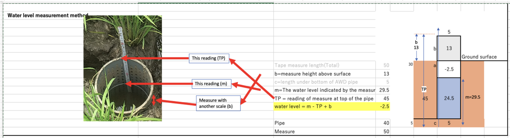

= required
Site and field
Sowing and seedling age
The scheduling app assumes transplanting 35 days after sowing. If your seedlings are older, enter the "app date" above as the sowing date of the app. This app does the same calculation for you in the Schedule tab.
Plots and water-pipe settings (TP and b)
Water level (cm) = m − TP + b, where m = tape reading at the water surface, TP = tape reading at the top of the pipe, b = height of the pipe top above the ground. Negative = water below the soil surface.

3F4D+MD schedule
Planned dates are calculated from the sowing date and seedling age (same rules as the 3F4D+MD scheduling app, Professional mode). When an event happens, open it and enter the actual date.
Settings (days) – change only if you changed them in the scheduling app
Daily water level
How to read m, TP and b (figure)
Entries
Field records
Record fertilizer, pesticide and tiller counts. They are included in the share link and the exports.
Fertilizer
Pesticide
Tiller count
Count tillers on 5 hills. The value used is the mean of the 2nd, 3rd and 4th largest counts.
Re-measure TP and b
After Pitan and mid-season drainage the soil shrinks and b changes. Measure TP and b again and record them here. Water levels from that date use the new values.
Compare sites
Your site is shown with thick lines. All sites come from the shared Google Sheet. X axis: days after transplanting (DAT).
Help
3F4D manual
How to practise 3F4D+MD (needs internet):
The 5 buttons at the bottom
- Today: what to do today, the latest water level and the next events of the schedule.
- Entry: Water level (every day), Field records (fertilizer, pesticide, tillers) and TP / b (re-measurement).
- Graphs: water level, irrigation and saving of your site.
- Compare: your site against other sites (added with compare links).
- More: Setup, Schedule, Google Sheet & sharing, Help, For the administrator, demo.
1. First time
- Administrator, once: More > For the administrator. Download the Excel template, make the shared Google Sheet from it, add the script and create the setup link.
- Open the setup link from your administrator once. It connects the app to the shared Google Sheet.
- More > Setup: enter Site name, place, sowing date, seedling age, and TP / b of both plots (items marked * are required).
- The Today screen shows these steps (0 to 3) with a tick when each is done.
2. Every day
How to read m, TP and b:
- Today > Enter today's water level (or Entry > Water level). Enter the tape reading m of FP and 3F4D+MD. The water level appears at once under the box. The − and + buttons change m by 0.1.
- If you irrigated, answer Yes and enter the readings before and after irrigation. The irrigation (mm) appears at once.
- "Save entry" works only when all required items (*) are filled and the values are in range. Saved data go to the shared Google Sheet automatically.
- You can add a photo of the pipe. Photos stay on this phone; they are not sent to the sheet.
3. Correct a mistake
- Water level: in the Entries list press ✎, change the values and press Save entry again (same date = overwrite). ✕ deletes the day.
- Fertilizer, pesticide, tillers, TP/b: press ✎ in the list, change, press Update. ✕ deletes.
- After any correction the new version is sent automatically.
4. Schedule
More > Schedule. Planned dates appear by themselves. When an event happens, open it and enter the actual date. The Today screen shows the next events.
5. Compare
Compare shows your site and the other sites that your administrator added with compare links (More > For the administrator > Compare with other sites). It loads by itself when the app opens; "Refresh from sheet" reads again. Tick the sites to show. A compare link only lets others read; they cannot change your data.
6. Demo, new phone, backup
More > Try with demo data: example data, nothing is saved. On a new phone: open the setup link, then More > Google Sheet & sharing > Restore from the sheet. The shared Google Sheet is the master copy.
Sheet-only version
Sites that prefer to enter data directly in a Google Sheet can use the sheet version (More > For the administrator > Sheet-only version). It has the same calculations, checks, schedule and graphs, but no comparison between sites.
7. Install on a phone
Open the app address in Chrome once with internet, then choose "Add to Home screen". After that it also opens without internet; data are sent to the sheet when you are online again.
Excel template
Template of the shared sheet (tab "Data" and a guide). The administrator uploads it to Google Drive and makes the shared Google Sheet from it (steps: Share tab > Google Sheet connection).
For the administrator (once)
- Download the Excel template (above), upload it to Google Drive and open it with "Save as Google Sheets".
- In the sheet: Extensions > Apps Script. Delete the sample code, paste the script (button below) and save.
- Deploy > New deployment > Web app. Execute as: Me. Who has access: Anyone. Authorize, then copy the web app URL.
- Paste the URL below, press "Test connection", then "Create setup link" and send that link to the users.
- To compare with other sites: exchange compare links with their administrators (below).
Setup link (for the administrator)
After you have entered the web app URL above, create one link and give it to the users. Opening it fills in the URL on their phones.
Compare with other sites
Each site has its own Google Sheet. To compare sites, the administrators exchange compare links. A compare link only lets others read your site's data; they cannot change it.
1. Your compare link (give it to other sites)
2. Add other sites (paste their compare link)
Sites added here appear in Compare for every user of your site.
Sheet-only version (without the app)
For sites that prefer to enter data directly in a Google Sheet, in the layout of the field irrigation-schedule workbook (dates across). It has the same calculations, checks, schedule and graphs as the app (no comparison between sites). Upload it to Google Drive, open it with "Save as Google Sheets" and share it with the users of the site. Instructions are in the tab "Guide".
To see the graphs of several sheet-version sites together, use the 3F4D Site Viewer (each sheet shared as "Anyone with the link: Viewer").